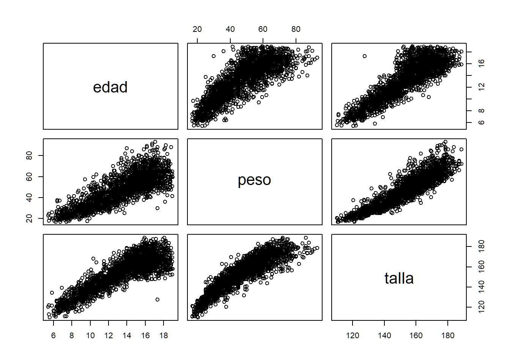
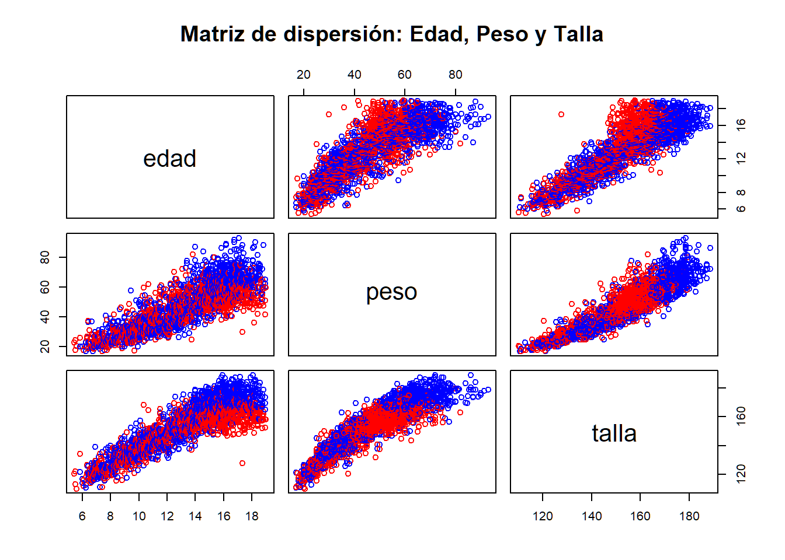

El objetivo de este ejercicio es explorar la relación entre edad,
peso y talla en el dataset children.csv.
# Cargar el archivo children.csv y hacemos de DataFrame pediatria
pediatria <- read.csv2("children.csv")
# Visualizamos los seis primeros datos
head(pediatria)## sexo edad peso talla
## 1 hembra 5.42 23.0 120.5
## 2 hembra 5.50 24.5 122.0
## 3 hembra 5.50 18.0 113.0
## 4 hembra 5.58 20.5 110.0
## 5 hembra 5.83 26.0 134.2
## 6 varon 5.83 20.0 121.5# Eliminar la primera columna (asumiendo que no es numérica o es un ID)
pediatria_clean <- pediatria[, -1]
head(pediatria_clean)## edad peso talla
## 1 5.42 23.0 120.5
## 2 5.50 24.5 122.0
## 3 5.50 18.0 113.0
## 4 5.58 20.5 110.0
## 5 5.83 26.0 134.2
## 6 5.83 20.0 121.5Primero, cargamos el archivo, miramos los seis primeros datos y eliminamos la primera columna sexo (asumiendo que es un identificador no relevante para el cálculo numérico).
# Eliminamos la primera columna sexo (asumiendo que no es numérica o es un ID)
pediatria_clean <- pediatria[, -1]
# Visualizamos el nuevo DataFrame limpio de la primera columna
head(pediatria_clean)## edad peso talla
## 1 5.42 23.0 120.5
## 2 5.50 24.5 122.0
## 3 5.50 18.0 113.0
## 4 5.58 20.5 110.0
## 5 5.83 26.0 134.2
## 6 5.83 20.0 121.5Con pairs() hacemos la matriz de gráficos de
dispersión

Mejorar la visualización:
Para visualizar las relaciones, utilizaremos la función
pairs(). Añadimos color para diferenciar por la variable
sexo.
# Definimos colores según el sexo (ajusta la columna según tu dataset)
colores <- ifelse(pediatria$sexo == "varon", "blue", "red")
# Representamos las variables de interés: edad, peso y talla
# Nota: Asegúrate de que los nombres de las columnas coincidan con tu CSV
pairs(pediatria_clean[, c("edad", "peso", "talla")],
col = colores,
main = "Matriz de dispersión: Edad, Peso y Talla")
Calculamos la matriz de correlación para observar la fuerza de la relación lineal entre estas variables.
Aquí tienes el resumen ejecutivo del código:
vars_interes <- ...: Filtra tu
base de datos para quedarte solo con las columnas que
vas a analizar (edad, peso, talla).
cor(..., use = "complete.obs"):
Calcula la fuerza de la relación lineal entre ellas. El argumento
complete.obs evita errores eliminando las filas que tengan
datos vacíos (NA).
abs(...): Convierte todos los
resultados a positivo. Esto te permite ver la
intensidad de la relación sin que el signo (positivo o
negativo) te distraiga.
print(...): Muestra la matriz final
en la consola para que puedas leer los coeficientes.
# Seleccionamos solo las columnas de interés
vars_interes <- pediatria_clean[, c("edad", "peso", "talla")]
# Calculamos la matriz de correlación
matriz_corr <- cor(vars_interes, use = "complete.obs")
# Si deseas ver el valor absoluto como en tu ejemplo original:
corr_abs <- abs(matriz_corr)
print(corr_abs)## edad peso talla
## edad 1.0000000 0.8194018 0.8667918
## peso 0.8194018 1.0000000 0.9031220
## talla 0.8667918 0.9031220 1.0000000## edad peso talla
## edad 1.0000000 0.8194018 0.8667918
## peso 0.8194018 1.0000000 0.9031220
## talla 0.8667918 0.9031220 1.0000000